Квартира 56 м² · джапанди
Листов: 81 · блокеров: 0 · замечаний: 32 · проверка
01-decorator-cover.svg — Титульный лист (decorator)
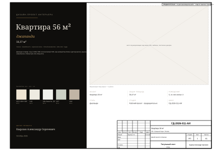
02-draftsman-general.svg — Общие данные (draftsman)
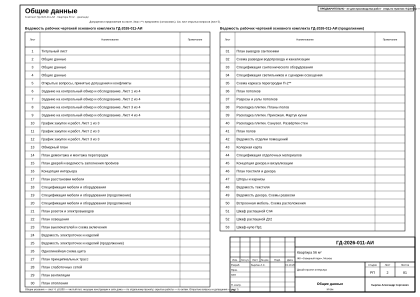
03-draftsman-general-2.svg — Общие данные (draftsman)
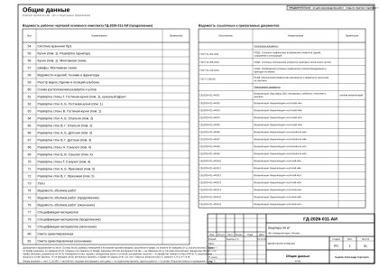
04-draftsman-general-3.svg — Общие данные (draftsman)
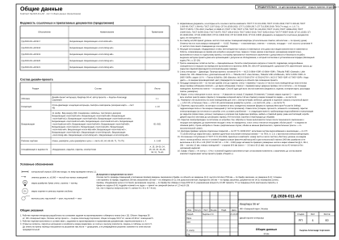
05-foreman-open-issues.svg — Открытые вопросы, принятые допущения и конфликты (foreman)
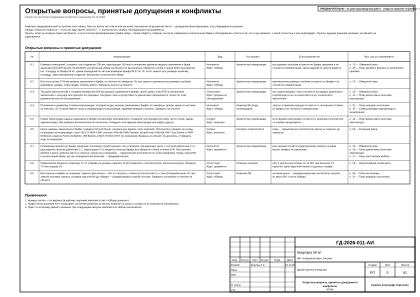
06-foreman-survey-task.svg — Задание на контрольный обмер и обследование. Лист 1 из 4 (foreman)
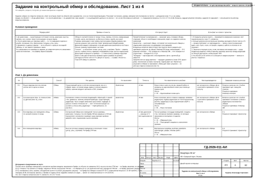
07-foreman-survey-task-2.svg — Задание на контрольный обмер и обследование. Лист 2 из 4 (foreman)
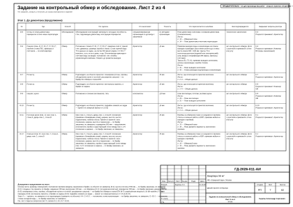
08-foreman-survey-task-3.svg — Задание на контрольный обмер и обследование. Лист 3 из 4 (foreman)
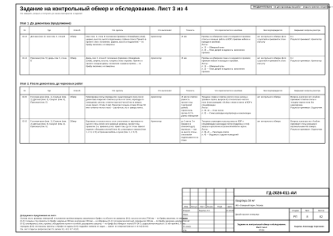
09-foreman-survey-task-4.svg — Задание на контрольный обмер и обследование. Лист 4 из 4 (foreman)
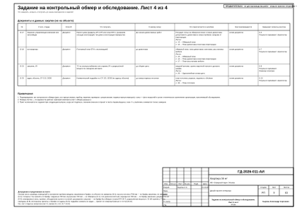
10-foreman-procurement.svg — График закупок и работ. Лист 1 из 3 (foreman)
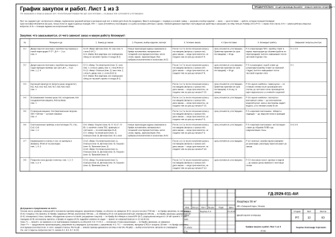
11-foreman-procurement-2.svg — График закупок и работ. Лист 2 из 3 (foreman)
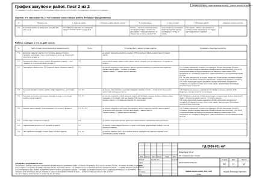
12-foreman-procurement-3.svg — График закупок и работ. Лист 3 из 3 (foreman)
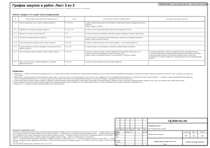
13-architect-obmer.svg — Обмерный план (architect)
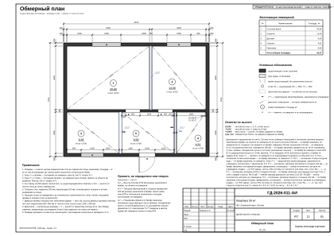
14-architect-demolition.svg — План демонтажа и монтажа перегородок (architect)
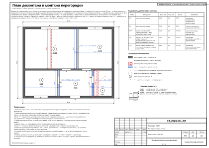
15-architect-doors.svg — План дверей и ведомость заполнения проёмов (architect)
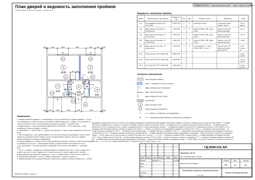
16-interior-designer-concept.svg — Концепция интерьера (interior-designer)
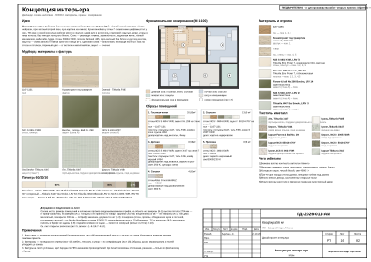
17-interior-designer-furniture.svg — План расстановки мебели (interior-designer)
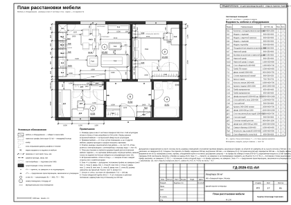
18-interior-designer-spec.svg — Спецификация мебели и оборудования (interior-designer)
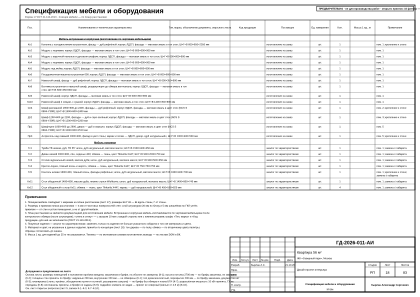
19-interior-designer-spec-2.svg — Спецификация мебели и оборудования (продолжение) (interior-designer)
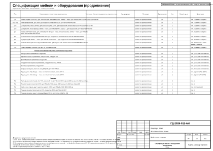
20-interior-designer-spec-3.svg — Спецификация мебели и оборудования (продолжение) (interior-designer)
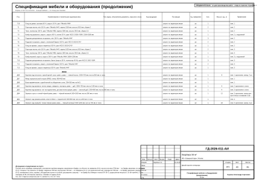
21-electrical-engineer-sockets.svg — План розеток и электровыводов (electrical-engineer)
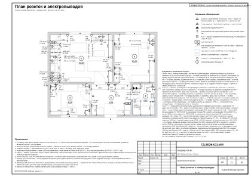
22-electrical-engineer-lighting.svg — План освещения (electrical-engineer)
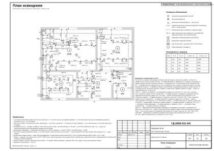
23-electrical-engineer-switches.svg — План выключателей и схема включения (electrical-engineer)
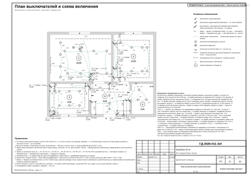
24-electrical-engineer-schedule.svg — Ведомость электроточек и изделий (electrical-engineer)
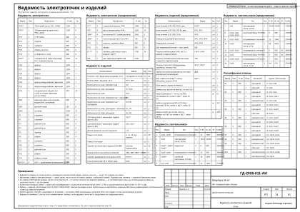
25-electrical-engineer-schedule-2.svg — Ведомость электроточек и изделий (продолжение) (electrical-engineer)
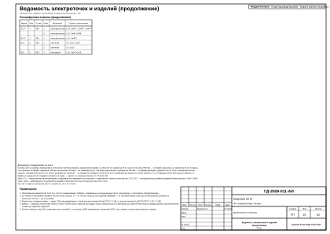
26-electrical-engineer-panel.svg — Однолинейная схема щита (electrical-engineer)
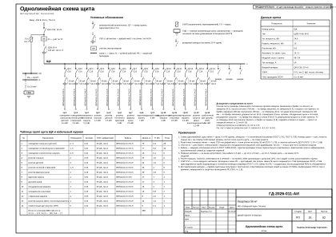
27-electrical-engineer-routing.svg — План принципиальных трасс (electrical-engineer)
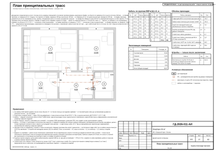
28-electrical-engineer-low-current.svg — План слаботочных сетей (electrical-engineer)
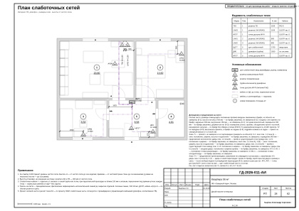
29-hvac-engineer-ventilation.svg — План вентиляции (hvac-engineer)
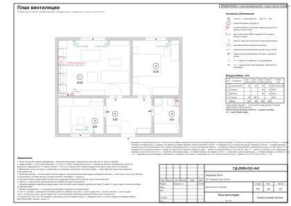
30-hvac-engineer-heating.svg — План отопления (hvac-engineer)
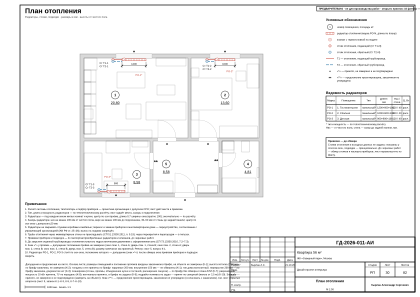
31-plumbing-engineer-vyvody.svg — План выводов сантехники (plumbing-engineer)
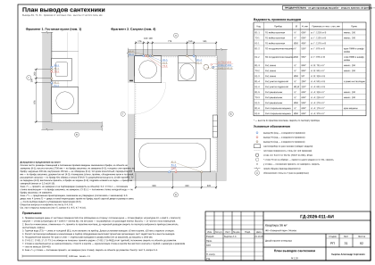
32-plumbing-engineer-razvodka.svg — Схема разводки водопровода и канализации (plumbing-engineer)
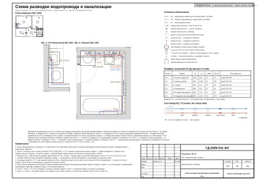
33-plumbing-engineer-spec-equipment.svg — Спецификация сантехнического оборудования (plumbing-engineer)
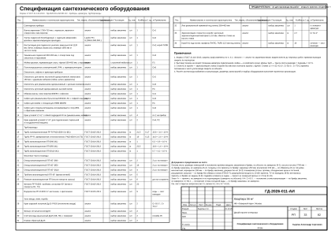
34-lighting-designer-lighting-spec.svg — Спецификация светильников и сценарии освещения (lighting-designer)
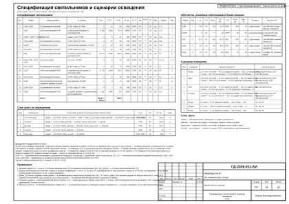
35-drywall-installer-partition-frame.svg — Схема каркаса перегородки П-2 (drywall-installer)
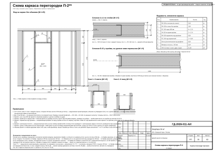
36-drywall-installer-ceiling.svg — План потолков (drywall-installer)
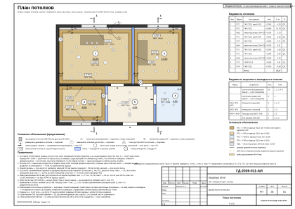
37-drywall-installer-ceiling-sections.svg — Разрезы и узлы потолков (drywall-installer)
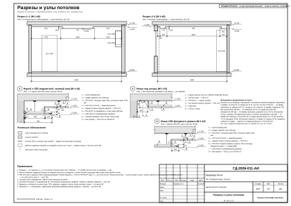
38-tiler-tile-floors.svg — Раскладка плитки. Планы полов (tiler)
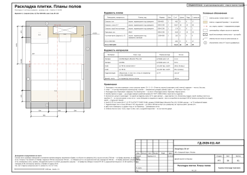
39-tiler-tile-extra.svg — Раскладка плитки. Прихожая. Фартук кухни (tiler)
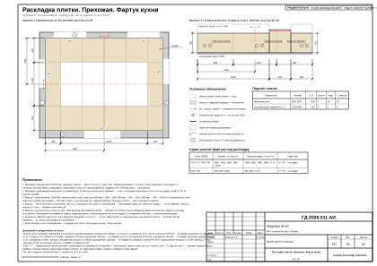
40-tiler-tile-walls-r4.svg — Раскладка плитки. Санузел. Развёртки стен (tiler)
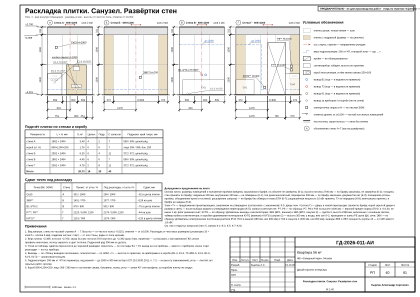
41-finisher-floors.svg — План полов (finisher)
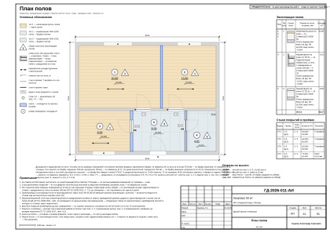
42-finisher-finish-schedule.svg — Ведомость отделки помещений (finisher)
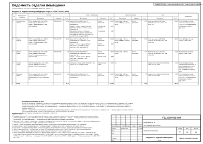
43-colorist-color-card.svg — Колерная карта (colorist)
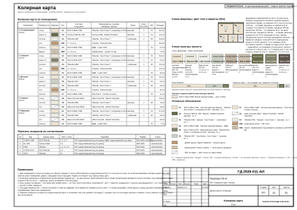
44-colorist-materials-spec.svg — Спецификация отделочных материалов (colorist)
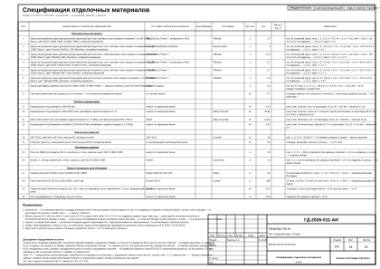
45-decorator-decor-concept.svg — Концепция декора и визуализации (decorator)
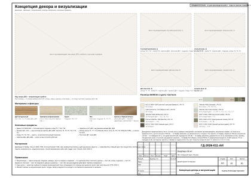
46-decorator-decor-plan.svg — План текстиля и декора (decorator)
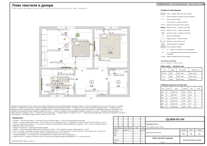
47-decorator-curtains.svg — Шторы и карнизы (decorator)
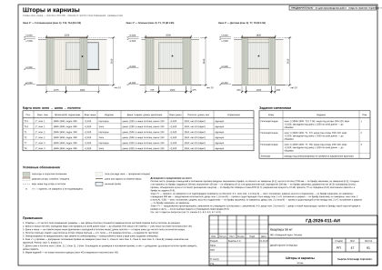
48-decorator-textile-schedule.svg — Ведомость текстиля (decorator)
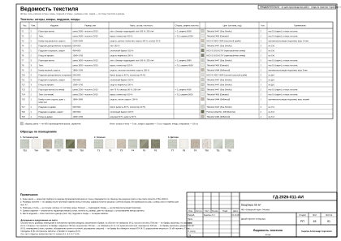
49-decorator-decor-schedule.svg — Ведомость декора. Схемы развески (decorator)
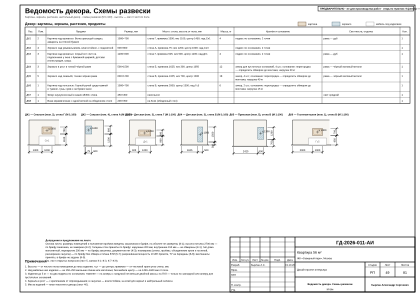
50-furniture-maker-furn-plan.svg — Встроенная мебель. Схема расположения (furniture-maker)
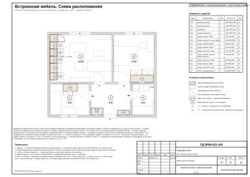
51-furniture-maker-furn-sp4.svg — Шкаф распашной Сп4 (furniture-maker)
52-furniture-maker-furn-dt2.svg — Шкаф распашной Дт2 (furniture-maker)
53-furniture-maker-furn-pr1.svg — Шкаф-купе Пр1 (furniture-maker)
54-furniture-maker-furn-pr3.svg — Система хранения Пр3 (furniture-maker)
55-furniture-maker-furn-kitchen-1d.svg — Кухня (пом. 1). Развёртка гарнитура (furniture-maker)
56-furniture-maker-furn-kitchen-1d-mount.svg — Кухня (пом. 1). Монтажная схема (furniture-maker)
57-furniture-maker-furn-mount.svg — Шкафы. Монтажная схема (furniture-maker)
58-furniture-maker-furn-schedule.svg — Ведомости изделий, техники и фурнитуры (furniture-maker)
59-draftsman-registers.svg — Реестр марок отделки и позиций альбома (draftsman)
60-draftsman-elev-key.svg — Схема расположения развёрток и узлов (draftsman)
61-draftsman-elev-r1-1.svg — Развёртка стены Г. Гостиная-кухня (пом. 1), кухонный фронт (draftsman)
62-draftsman-elev-r1-2.svg — Развёртки стен А, Б. Гостиная-кухня (пом. 1) (draftsman)
63-draftsman-elev-r1-3.svg — Развёртка стены В. Гостиная-кухня (пом. 1) (draftsman)
64-draftsman-elev-r2-1.svg — Развёртки стен А, Б. Спальня (пом. 2) (draftsman)
65-draftsman-elev-r2-2.svg — Развёртки стен В, Г. Спальня (пом. 2) (draftsman)
66-draftsman-elev-r3-1.svg — Развёртки стен А, Б. Детская (пом. 3) (draftsman)
67-draftsman-elev-r3-2.svg — Развёртки стен В, Г. Детская (пом. 3) (draftsman)
68-draftsman-elev-r4-1.svg — Развёртка стены А. Санузел (пом. 4) (draftsman)
69-draftsman-elev-r4-2.svg — Развёртки стен Б, В. Санузел (пом. 4) (draftsman)
70-draftsman-elev-r4-3.svg — Развёртка стены Г. Санузел (пом. 4) (draftsman)
71-draftsman-elev-r5-1.svg — Развёртки стен А, Б. Прихожая (пом. 5) (draftsman)
72-draftsman-elev-r5-2.svg — Развёртки стен В, Г. Прихожая (пом. 5) (draftsman)
73-draftsman-nodes.svg — Узлы (draftsman)
74-estimator-boq.svg — Ведомость объёмов работ (estimator)
75-estimator-boq-2.svg — Ведомость объёмов работ (продолжение) (estimator)
76-estimator-boq-3.svg — Ведомость объёмов работ (окончание) (estimator)
77-estimator-spec.svg — Спецификация материалов (estimator)
78-estimator-spec-2.svg — Спецификация материалов (продолжение) (estimator)
79-estimator-spec-3.svg — Спецификация материалов (окончание) (estimator)
80-estimator-estimate.svg — Смета ориентировочная (estimator)
81-estimator-estimate-2.svg — Смета ориентировочная (окончание) (estimator)